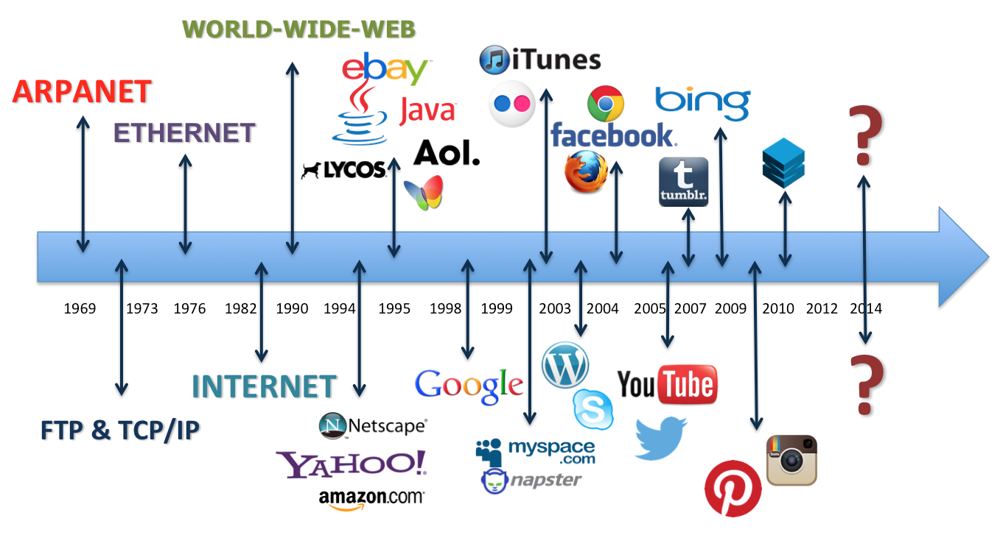
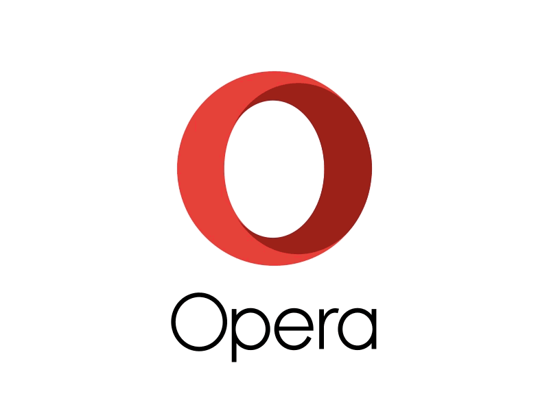

In the recent past, people had been applying different methods of communication, i.e., to transfer information or to share knowledge amongst each other through postage, telephone, couriers, meeting, news room, training, conference, etc.
In 2015, the International Telecommunication Unionestimated about 3.2 billion people (3.2×109 people), or almost half of the world's population, would be online by the end of the year. Of them, about 2 billion would be from developing countries, including 89 million from least developed countries.But, with the invention of computers extraordinary development has taken place in the field of communication and now sharing of information has become quicker and easier, irrespective of geographical location of recipients around the globe, there by replacing the traditional media of communications.
All such terms must be making you curious and tempted to explore more about them. These are actually based upon sharing of information among millions of computer around the globe which is commonly termed as "INTERNET".
Internet is an interconnected Wide Area Network (WAN) of millions of computer that are linked together around the world which share information in the form of data, graphics, sound, software, text, etc. instantly as and when required.
Internet is also referred to as "Network of Networks". It establishes a high level of connectivity which has resulted into an unparallel degree of fasted, easiest and the cheapest ways to transfer or share data and information around the globe. It provides access to communication services and information resources to millions of users around the globe, round the clock.
NOTE-Internet is a global network of computers that are inter-connected in such a manner that any computer, anywhere across the world can exchange information amongst each other by online services such as e-mail, net chatting, video conferencing, e-Commerce etc.
Internet has been the most useful technology of the modern time, which helps us not only in our daily lives, but also in our personal and professional lives developments.
Thus, some uses of Internet are as follows:
Internet maps its derivation back to 1969 when it evolved out of an experiment carried by the defence agency of United states. The department of US Defence was in a process of doing research and technical development in the areas where some of the services of defence (Army, Navy, Air force, Marine corps) had clear jurisdtion of operation.
This agency i.e., ARPA (Advanced Research Project Agency), which was later known as DARPA (Defence Advanced Research Project Agency), planned to create a computer network that would continue to operate even during the emergency or disastrous situations like war.
This had led to the development of ARPANET (Advance Research Projects Agency Network) which worked to link US Scientific and Academic Researchers for exchanging data and messages between. One computer to another. ARPANET started as a four node network in December 1969.
By 1970's, ARPA helped in the development of a new protocol known as TCP/IP (Transmission Control Protocol Internet Protocol) for transferring and tracking of data between the networks so that they can reach the destination end safely.
By 1980's, another federal agency of US named as National Science Foundation (NSF) used ARPANET to connect its five regional supercomputer centers located at different universities so that their multiple users could share the resources among themselves. Later, NSF created a more sophisticated network called NSFNET (National Science Foundation Network) which was a series of network that was utilized for research and development.
The link between ARPANET, NSFNET and other networks was termed as Internet. (The process of connecting separate networks with each other is called internetworking. A collection of 'networked networks' is described as being internetworked that is from where the 'Internet' gets its name).
Initially NSFNET was meant only for the purpose of academic research and was not in use for any private organization. As NSFNET did not permit its use to private organization, several private telecommunication companies built their own network backbones that used the same set of networking protocols as NSFNET used.
The original ARPANET lost its existence in 1990 and the government discontinue funding to NSFNET in 1995 and the commercial internet services replaced them. By early 1990s, internet expanded dramatically and the tool which was made for communication in wars found its way into general and commercial use (i.e., business, home, education, etc.).

Web Page:-
A web page is a document of information that can be accessed and viewed through a web through a web browser. Click here for more information.
Web Site:-
A location on the web server where an individual or a company or any organization uploads its information is known as website. Click here for more information.

Web browsers can also display animated images, play sound and video, provide secure connections and much more. Some common web browsers are Internet Explorer, Netscape Navigator, 'Mozilla', 'Opera,'Apple Safari, Google Chrome', etc. Many web browsers are upgraded frequently with enhanced features.
Web Address:-
Web Address is the name for identifying a website on internet. On internet, there are numerous web sites; it is only with the help of web address that we
can find a particular website. Click here for more information.
Web Servers:-
Web server is the principal computer or server that stores contents of different websites. It provides data and information to computers on request which
are connected to it through the network via internet. Click here for more information.
DO YOU KNOW-A computer attached to e networks is referred to as a workstation or node.
The primary protocol of internet is TCP/IP protocol which stands for Transmission Control Protocol/Internet Protocol. TCP is responsible for connection oriented transmission and IP is responsible for connectionless tansmission that represent logical address of the host machine, example: http// for accessing HTMI documents, https:// for accessing some 'Secure' HTML documents.
NOTE-Some URLs refers to a location within a resource. Such kind of URL ends with "#" followed by an anchor identifier called the fragment identifier, for instance; http://somesite.com/html/top.html#section_?.
It is a request/response protocol between clients and server. The originating client, such as a web browser, web spider or other end-user tools, is referred to as the user agent.
The server which stores or creates resources such as HTML files and images is called the origin server. In between the user agent and origin server, there may be several intermediaries, such as proxies, gateways, tunnels, etc. HTTP is called a stateless protocol because it does not keep the previously executed command in memory.
DO YOU KNOW-Development of HTTP was coordinated by the World Wide Web Consortium (W3C) and the Internet Engineering Task Force (IETF).

The computers on the Internet are connected to each other through small networks. These networks are connected through the gateways to the Internet backbone.
All computers on the Internet, communicate with one another using TCP/IP, which is a basic protocol (i.e.set of rules) of the Internet. TCP/IP (Transmission Control Protocol/Internet Protocol) manages thetransmission of data/file/document on the Internet by breaking the data/file/document into small pieces or parts called packets or datagrams.
Each packet contains actual data and address part, i.e. addresses of destination and source upto 1500 characters. Functioning of TCP and IP are as follows:
To get connected to the internet, the user has to enter his/her user name and password. This ensures and prevents the misuse of internet account by unauthorized persons. The users take 'access right' and get connected to the internet against certain fee which is paid to ISP.
In this type of connection, the speed of data transfer is lesser in comparison to broadband and the internet connectivity has to be established each time whenever a user switched 'ON' the computer.
It is faster than dial-up connection. Broadband connection can be established by three media i.e. Cable, DSL (Digital Subscriber Line) and Satellite.
NOTE-An intranet is a private computer network that is maintained by an organization for internal communication. It uses the resources of network (like internet) to share information or operation within its own workstation/department which cannot be accessed by other unauthorized person. Intranet is also established using internet protocol on net. Intranet provides an efficient way for information among employees at minimum cost, time and effort. Briefly, an intranet can be understand as 'a private version of the Internet', or as a version of the internet confined to an organization.